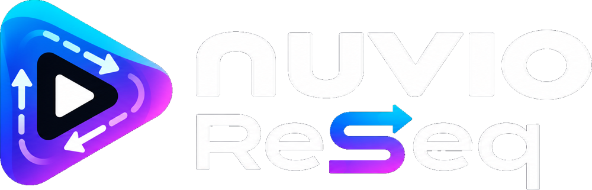

Browse. Play. Pick up again.
A TV-focused media library, artwork, search, subtitles, playback progress and Continue Watching. Connect supported addons and media services to build your own setup.
Independent Android TV app · Open source
Meet Nuvio ReSeq. Browse and play your media, explore live TV, and follow a series in the order that makes sense for you.
Free app · Bring your own addons and IPTV sources · Beta releases

A familiar foundation.
A different way to follow the story.
01 / Follow the story
Choose TheTVDB aired, DVD, absolute or alternate orders when available. ReSeq sends the season and episode numbers you see to your stream addons, while verified episode identities keep tracking connected to the underlying story.
How episode ordering worksAn example from The Office
Stream searching and tracking use different coordinates. You choose the returned stream; ReSeq does not inspect filenames or guarantee a matching edition.
02 / Everything in its place
A TV-focused media library, artwork, search, subtitles, playback progress and Continue Watching. Connect supported addons and media services to build your own setup.
Connect supported Nuvio, Trakt, Simkl and MDBList integrations. Verified correspondence handles episode-order changes and known split or combined episodes; ambiguous matches are not guessed.
Add your Xtream Codes account or M3U playlist and XMLTV guide. Browse channel groups, organise favourites and play live channels or supported provider On Demand content.
Sports Hub combines fixtures, supported live scores and results with suggestions from your own channels and guide. Coverage and broadcast matching depend on available data.
Optional Google Drive backup and sync carries your Live TV sources, favourites and preferences between devices. Backups can contain provider credentials. Read the privacy policy before connecting.
Understand Drive backup →Browse and play supported IPTV movies and series. Offer matching provider copies alongside addon and debrid results in the main stream picker, with configurable tab position and autoplay preferences.
03 / Make yourself at home
ReSeq is a free, independent fork of Nuvio for Android TV. It does not supply media, playlists or subscriptions. You choose the services you use and the content you are authorised to access.
Download the APK and checksum from GitHub Releases. Android 7.0 or later is required. Install updates over your existing ReSeq app to retain local data.
Configure supported addons and integrations. For Live TV, enter your own playlist or provider details. Use your own TheTVDB API key to enable alternate episode orders.
Choose an episode order, tune your guide and connect optional trackers. Start with the setup documentation for details and current beta limitations.
Built in the open
Maintained by abbaskip. Built on Nuvio and Nuvio + IPTV, with gratitude to their contributors. Source is available under GPLv3, with existing third-party notices retained.